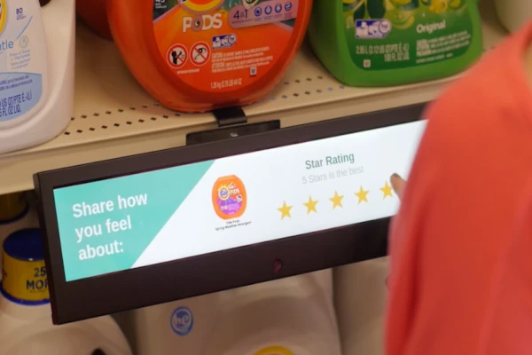
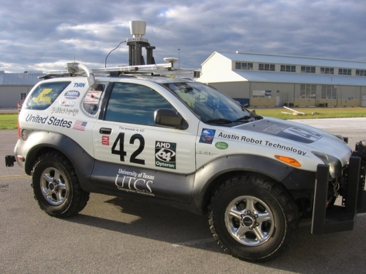
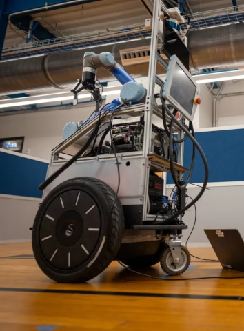

About Me
I am a software engineer with a focus on full-stack web application development who has been writing code since 2009 when I was a junior in High School. I went on to study Computer Science at the University of Texas at Austin, graduating in four years on May 2015.
Outside of work, I enjoy taking walks outdoors in the evenings, and try to get out and walk a couple miles around a local lake or nature trail whenever the weather permits it.
My wife and I enjoy running and playing games of Dungeons & Dragons. We sometimes paint miniatures together to bring to our games, and enjoy watching Dimension 20 and Critical Role for inspiration. We enjoy a number of other table top games including Love Letter, Dungeon Mayhem, Beard Wizards, Monikers, and Ticket to Ride.
We are the proud 'parents' of four wonderful cats; Snoreful, Tanner, George, and Gingerbread. Snoreful is the undisputed queen of our household who has graciously allowed us to remain in 'her' house. Tanner is a friendly troublemaker, and George is a good boy, a scaredy cat, and Snoreful's favorite. Gingerbread is the newest addition to our fluffy family and the youngest member of our household; being only 2 years old he's the lone young adult in a house full of almost-senior cats. An unending flood of cat pictures is available upon request.
Organizations with missions we support include Austin Pets Alive and the Inside Books Project. Austin Pets Alive is a no-kill shelter in Austin from which we have adopted a total of six cats over the years. Inside Books Project provides books and other educational material to inmates in Texas. Good ways to support Inside Books include donating lightly used books, especially dictionaries, volunteering, and donating money or stamps to help pay for the cost of shipping.
Work Experience
Rhythmo
Rhythmo is a start-up with the goal of providing entry-level DIY finger drumming equipment for hobbyist DJs at an affordable price. Our main product, the BeatBox, is a DIY MIDI controller. An in-app tutorial guides the customer through assembly, allowing Rhythmo to provide quality parts at a competitive price.
My main focus at first was improving the appearance of the app. With assistance from our amazing graphical designer, the app went from looking like it did in the above video, to its current-day appearance.


Once we were satisfied with the UI, I added a new Effects section which can be used to apply various audio filters to the audio, with the option to apply an effect only to a specific group of samples, or to the entire audio output for that project. Effects I have worked on include high-pass and low-pass filters, reverb, overdrive, noise, delay, bitcrusher, and LofiTape.
Aztec Promotional Group
Aztec is a screen-printing/embroidery company headquartered in Austin, TX, which sells a wide variety of custom promotional items. During my time at Aztec, I maintained legacy internal software used for Customer Relations Management (CRM), production management, and artwork tracking. Once we were comfortable with the stability of the legacy apps, I also began the process of migrating the legacy programs to the cloud, completely migrating the server and the production management software to a web-based model, along with sections of the CRM software. We shared an office with a sister company, Axial Commerce, and some of my favorite memories from my time at Aztec were conferring with the Axial developers about design choices, the occasional odd remark about idiosyncrasies between programming languages, and getting to see the tech needs of two companies along with how well each attempted solution worked.
Aztec's Instagram is a good place to look at examples of the types of products which can be embossed at Aztec. Aztec keeps a stock of commonly embossed items such as shirts and mugs for the customer's convenience, or the customer can send in the items they want embossed.
EyeQ
My first tech-related internship was with EyeQ, a start up of only four people at the time, which has since been acquired by Alpha Modus. EyeQ's core technology was image recognition software that could track various demographics information, with the intended use being to provide insights to retailers about shopping habits. It could track return visitors to a business, estimate age with surprising accuracy, and track the moods of customers based on their expressions. During my internship, I researched various ways to improve the accuracy of the age-detection software, which was being thrown off slightly by the presence of glasses, and return customer tracking, around the time iOS began randomizing MAC addresses in an attempt to prevent device tracking.

Despite being a small company, our CTO had close to a decade of experience working at Dell, and was able to introduce me to some of the processes and strategies used by larger companies when it comes to QA testing and planning feature development. The daily scrum was especially interesting at EyeQ due to the small size of the company. While it may not have been strictly necessary for me to know how things were going on the CEO's side of the company, it provided a sense of meaning to the work, and excitement about future contracts.
Personal Projects
Shulker's Faithful Factories


Shulker's Faithful Factories is a mod for Minecraft 1.15 and 1.16 using the Forge API. It is meant to stay close to the experience of the vanilla game while adding new methods to farm for in game resources. Many engineers enjoy Minecraft because of its complex, Turing complete, form of wiring in-game contraptions called redstone. Shulker's Faithful Factories aims to add new mechanics so that items that could previously only be collected through exploration, or semi-automatic farms which require the player to afk, can be collected by making new types of redstone contraptions. Much of the mod's popularity can be attributed to the addition of Shulker Factories. These factories are procedurally generated structures filled with traps and loot, and each contains a spawner for 'Shulkers': hostile mobs that are non-renewable prior to Minecraft version 1.17.


Code is availible on GitHub, a mod description and download links are availible on CurseForge, and screenshots of some of the features which have been added are here on Curseforge.
Shulker's Super Simple Structure System


Mods and data packs which add structures to Minecraft can be the difference between feeling like an explorer in an untouched jungle, or the sole survivor of a zombie apocalypse. Shulker's Super Simple Structure System is meant to provide a way for players and modpack designers with no coding experience to have the structures they have made generate automatically in their worlds and/or their friend's worlds. It is especially useful for modpack designers who wish to create a certain atmosphere in their modpack by spawning structures of their design in the biome(s) of their choice, with a rarity of their choosing.
Code is availible on GitHub, and a mod description and download links are availible on CurseForge.
Shulker's Structures


Shulker's Structures predates Shulker's Super Simple Structure System, and was the main source of inspiration for the structure system. After creating Shulker's Faithful Factories, I realized that I had many structures in my single player minecraft world that could easily made into structure files, and which would bring some life to the average Minecraft world. While it could be mostly remade inside of Shulkers Simple Structure System, I left the mod up to serve as an easy way for modpack designers to add structures, and because some of the structures in this mod have unusual spawning mechanics which could not be easily replicated. For instance, it adds barns which can only spawn near, but not within, villages.
Code is availible on GitHub, a mod description and download links are availible on CurseForge, and screenshots of some of the structures which have been added are here on CurseForge.
ThunderBuddy
ThunderBuddy is a web app which texts subscribers when thunderstorms are possible in their area. It is meant to be appealing due to the simplicity of the sign-up process; only a phone number and zip code are required to subscribe. ThunderBuddy is powered by Weather Underground, Twilio, DigitalOcean, MySQL, Gmail, Python 3, Flask, and Tornado.
Code is availible on GitHub.
Service has been suspended indefinitely.
Other Projects
University of Texas Freshmen Research Initiative: Autonomous Cars
The Autonomous Cars track of the Freshman Research Initiative (FRI) at UT Austin allowed freshmen to write code that would potentially be ran on UT's own autonomous car. I was part of the final class before the track changed to Autonomous Robots due to a decreasing number of successful student projects as the available tasks had become more difficult each year until it was too difficult for most freshmen. The fall semester that year had around 20-30 students, and only 3 of us remained in the spring semester, where the focus changed to reviewing and presenting summaries of research papers detailing important robotics navigation algorithms, such as Monte Carlo Localization, and various computer vision algorithms. The next year I went on to be an Undergraduate Mentor for the newly created Autonomous Robots track, which replaced the Autonomous Car track.
University of Texas Freshmen Research Initiative: Autonomous Robots
 As an Undergraduate Mentor, I held office hours and assisted any groups which needed help with their projects. The robot used became a segue with a marine battery, laptop, and kinect camera attached; much simpler and safer for freshmen to work with than the car of previous years. Due to the slight change in subject matter, and working with a different grad student this year, I attended the classes in order to be the best mentor possible, and learned much more than I expected. The students this year were much more successful with their projects than those in the car track the year prior, with projects varying from calibrating a drone made from scratch by Electrical Engineering students, to controlling the drone using an electroencephalogram measuring brain activity, to controlling the segue robots using kinect gestures, to autonomously mapping our floor of the building (elevators were a bit much for the first year, no matter how much we wanted the robots to be able to fetch coffee).